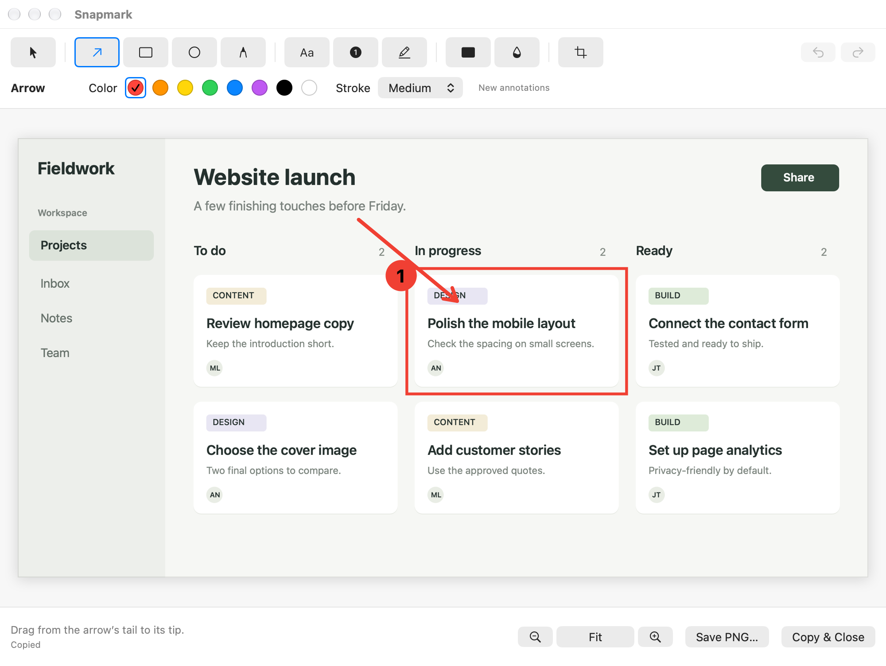

Capture what matters.
Select an area, pick a window, or capture your screen. Start from the menu bar or a shortcut that suits you.
Take a screenshot, mark up the details, and paste it into a message. All from your Mac menu bar.
Download for Mac
Select an area, pick a window, or capture your screen. Start from the menu bar or a shortcut that suits you.
Add arrows, text, shapes, and numbered markers. Cover sensitive details with solid redaction before you share.
Your clipboard updates as you edit. Paste the finished image into a message, or save a PNG to keep.
Your current screenshot stays in memory on your Mac. Save a PNG or copy it when you’re ready to share.
Open the disk image and drag Snapmark.app to Applications. Allow Screen Recording when macOS asks on your first capture.
Download SnapmarkWhat’s in version 0.1.0